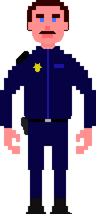

Personaggi del gioco
Il detective
Il detective è il personaggio che l'utente impersonificherà. Apparirà nella seguente figura:E' colui che si occuperà del caso, analizzando i vari indizi ed interrogando i diversi sospettati.
Agente Wilson
L'agente Wilson è colui che aiuterà il detective nel caso. Apparirà nella seguente figura:
E' un uomo deciso ma gentile, pronto ad aiutare il prossimo. All'interno della polizia ce ne doverbbero essere di più come lui.
Sarà il principale aiutante dell'utente, sebbene anche per lui il caso è molto contorto.
Se hai estrema necessità, chiedi a lui.
Lavinia Weir
Lavinia Weir è una delle sospettate dell'omicidio. Apparirà nella seguente figura:E' la moglie dell'uomo assassinato, Horace Caine.
E' una donna risoluta e molto forte, ha dovuto crescere i suoi figli da sola, date le prolungate assenze del marito per viaggi di affari.
Nonostante ciò, a sua detta, lo ha sempre amato e continuerà a farlo.
Sepp Jaytene
Sepp Jaytene è uno dei sospettati dell'omicidio. Apparirà nella seguente figura:E' stato in passato il contabile che si occupava di registrare tutti i numeri dell'impero di Horace Caine, l'uomo assassinato brutalmente.
Venne licenziato in tronco quando una sua azione illegale sui conti di Caine venne scoperta dagli ispettori del fisco.
Da allora non è riuscito a trovare nessuno che lo assumesse.
Valentine Locke
Valentine Locke è una delle sospettate dell'omicidio. Apparirà nella seguente figura:E' la segretaria del signor Caine, colei che gestisce gli apputamenti di lavoro e le varie chiamate dirette per l'imprenditore al suo ufficio.
Scaltra e testarda, tutti sanno che è innamorata dell'uomo d'affari. E si sa bene quanto sia pericolosa una donna pazza innamorata...
Frank Fournite
Frank Fournite è uno dei sospettati dell'omicidio. Apparirà nella seguente figura:E' l'ex socio in affari di Horace Caine, l'uomo assassinato.
E' un tipo goliardico, a cui piace molto scherzare, ma che è sempre pronto all'ira e alla rissa, soprattutto dopo aver bevuto.
Il suo rapporto con Caine si è concluso poco tempo fa in modo distruttivo. Soprattutto per la macchina di Horace...
ND Rew
ND Rew è uno dei sospettati dell'omicidio. Apparirà nella seguente figura:
E' l'androide da compagnia del signor Caine.
E' uno dei primi esemplari di androide con cervello positronico Nexus6, prototipo di nuovissima generazione.
Sembra che abbia sviluppato dei sentimenti, cosa incredibile per un robot. E chissà dove potrebbero spingersi, a questo punto...
Horace Caine
Horace Caine è la vittima dell'omicidio. Apparirà solo nel livello 2, quando verrà trovato senza vita in una sua vecchia fabbrica.Miliardario, filantropo e grande imprenditore, in città
è conosciutissimo per il suo impegno sociale e per la sua gentilezza.
Chi può davvero volere che un uomo del genere muoia?
J. Gordon
J. Gordon è il commissario della polizia della città. Non apparirà mai fisicamente nel gioco ma sarà comunque presente.E' un uomo duro, di altri tempi.
In passato ha combattuto il crimine organizzato presente nella città usando la linea dura, sconfiggendolo definitivamente.
E' una sorta di eroe, sebbene molta gente preferisce dare il merito delle sue imprese ad un certo vigilante oscuro che si traveste da topo volante...